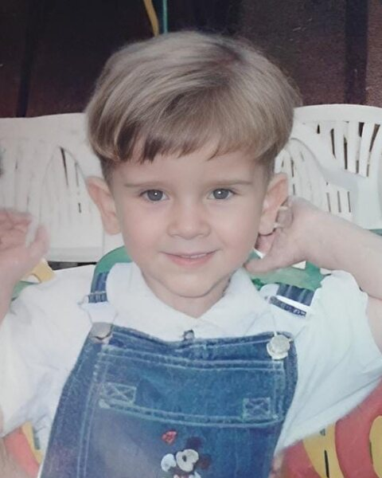
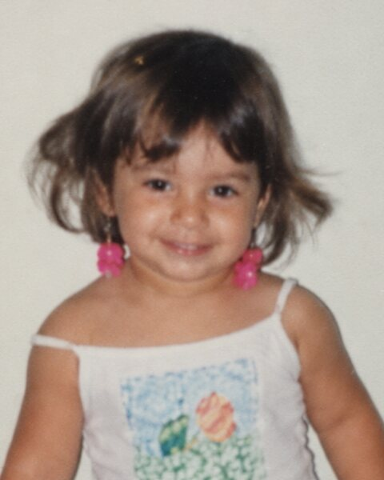
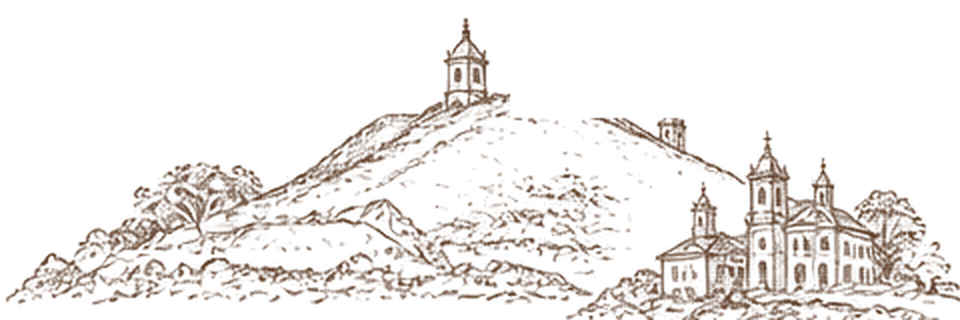
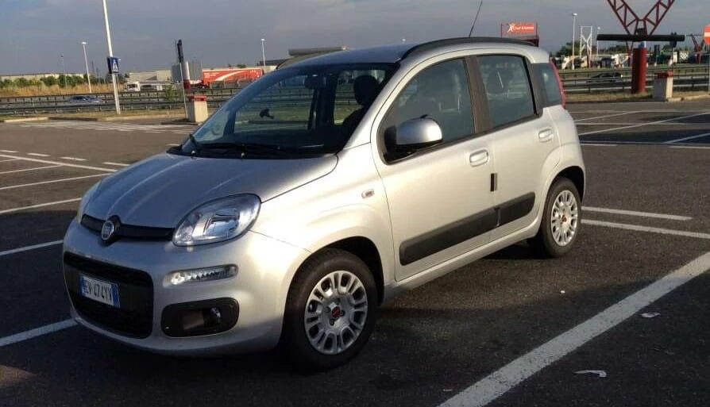
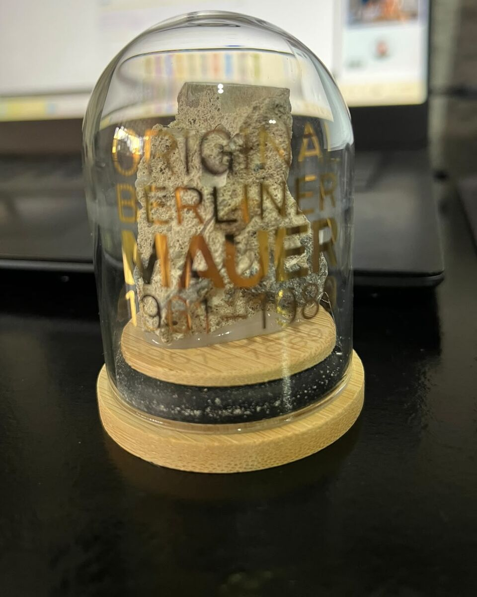
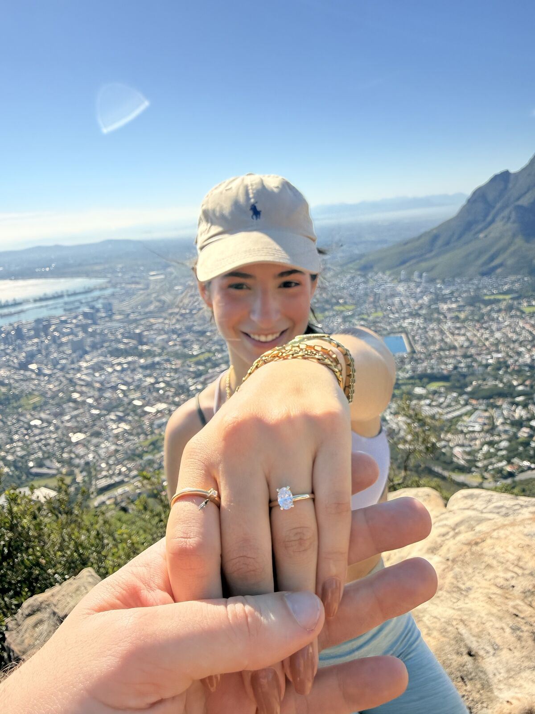
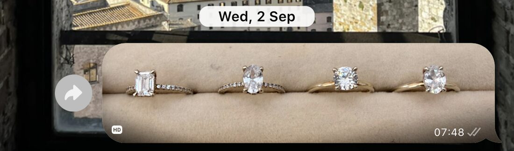
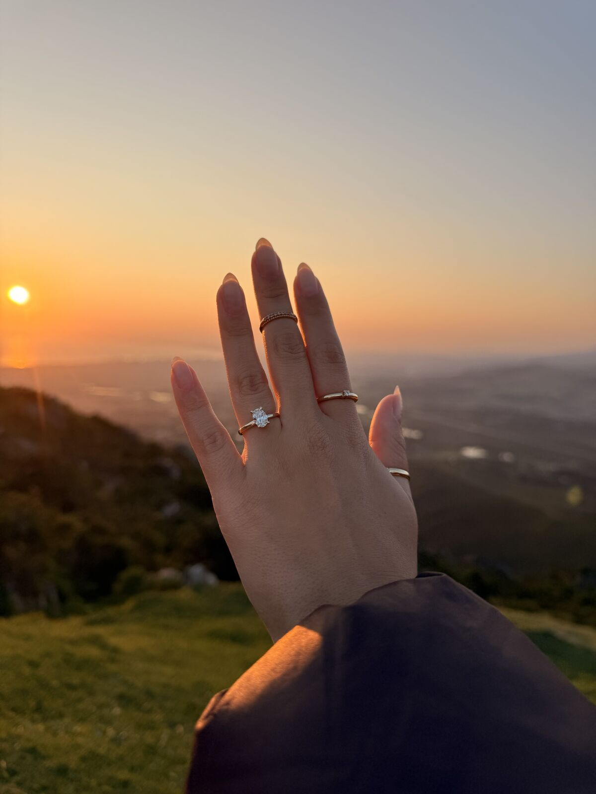
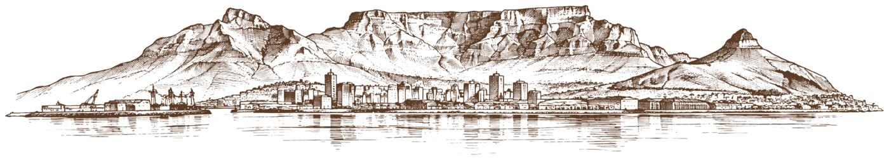

Foi amor à primeira vista.
*Helena recusou o primeiro beijo.
Depois quase entrou no banheiro masculino atrás dele.


olha as carinhas de bebê

vão se casar
23 . 01 . 2027
SABARÁ · MG
Depois de tantos lugares, chegamos à versão completa* da história.
*Ou quase. Algumas informações foram omitidas.
Ler a históriaFoi amor à primeira vista.
*Helena recusou o primeiro beijo.
Depois quase entrou no banheiro masculino atrás dele.


Os dois conversam por telefone por horas e horas e horas e horas e horas e horas e horas e horas e horas e horas e horas e horas e horas e horas…
Às vezes, literalmente seis.
Segundo encontro foi em Sabará.
Italo atravessou Belo Horizonte para ver Helena.
Para melhorar a noite, Sabará estava, tecnicamente, debaixo d’água.
E a roda do carro do Italo quebrou na volta.
“O amor custa caro.”Clarice Lispector
Começam a namorar.
Sim!!! Foram quase 5 anos pra casar.desafiando os limites da paciência da família
Itália, Chile e, no último ano, um intercâmbio que quase acabou virando mochilão.
Na Itália, Helena realiza o sonho de cruzar a Toscana de Panda.

De um desses lugares, Italo voltou com isto:

Depois de um ano e vinte dias fora, seis meses morando em Malta, muitos países e já dividindo a vida há algum tempo, eles embarcam para o último destino do intercâmbio:
“Ou a gente volta noivo, ou volta solteiro.”
Em tom de brincadeira. Mais ou menos.
Italo
Helena
“Não tem problema morrer se eu vir a leoa de perto.”
“Não pode olhar pra leoa, só pelo celular.”
Helena também sustenta que o veículo foi estrategicamente posicionado como isca.
Não há provas conclusivas.
A leoa não atacou.
O ultimato continuava de pé.

Foi Helena quem escolheu cuidadosamente o anel de noivado.
*Tocar no nome pode alterar sua percepção sobre o noivo.

O anel estava resolvido.
Faltava uma coisa.
o pedido!


Cape Town, África do Sul
Foi aqui.
A gente se casa na quarta-feira, 20 de janeiro.
No sábado, 23, comemoraremos em Sabará com a família, os amigos e algumas das pessoas que estavam por perto desde o começo.
Incluindo você.
A versão completa a gente conta ao vivo.
Digite seu nome e sobrenome para encontrar o seu convite. Confirme até [data limite].
Esporte fino e colorido. Venha com a roupa mais colorida que tiver, em cores fortes, como um campo de flores. Terno não é necessário.
Não. A gente se casa na quarta-feira, 20 de janeiro. No sábado é só comemoração.
Pode, sim. Crianças são muito bem-vindas e vai ter comida para elas.
Na rua, com espaço suficiente.
Não. Cada convidado vai e volta por conta própria.
Você não é de açúcar. A comemoração continua no mesmo lugar.
A gente está começando a montar a nossa casa. Se você quiser nos presentear, escolha o jeito que for mais fácil pra você:
Se um dia você olhar para alguma coisa e pensar “isso é muito a cara deles”, esse pode ser o presente.
A ideia é que, daqui a alguns anos, a gente olhe para aquilo e lembre de quem deu.
ou
Pra facilitar, separamos algumas coisas que ainda faltam na casa. É só uma referência, não precisa seguir à risca.
ou
Se for mais prático, pode mandar um presente em dinheiro.
E se não quiser dar nada, tudo bem também.
Fique à vontade: o que importa mesmo é você estar lá com a gente.